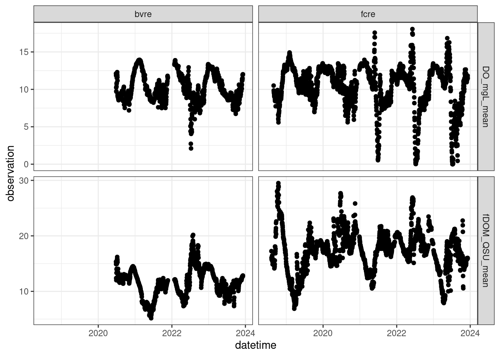
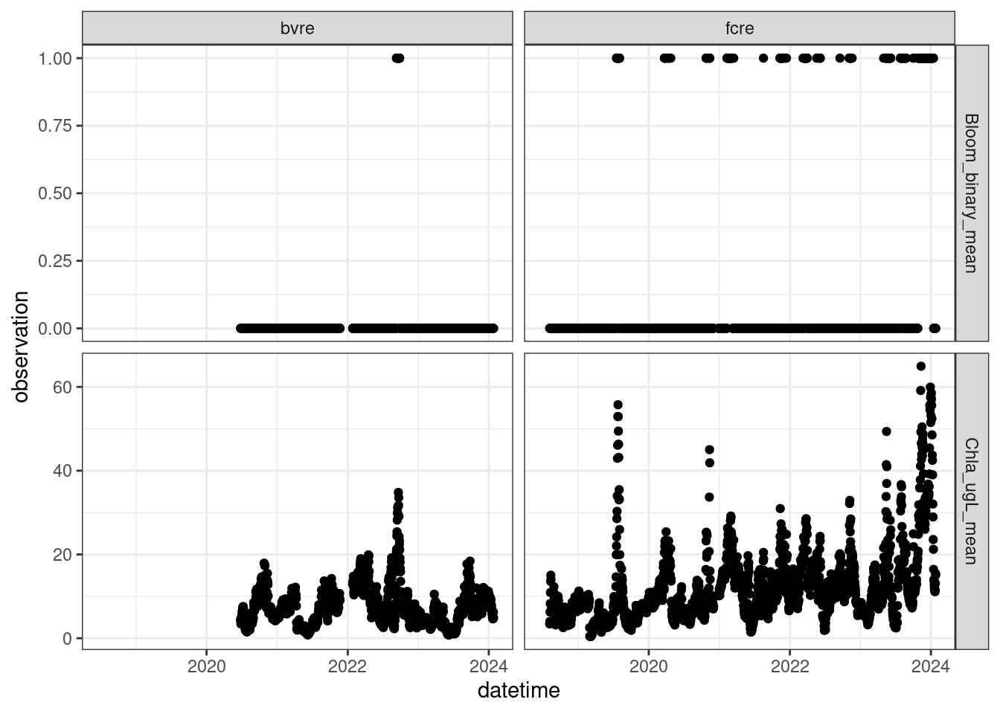

url <- "https://renc.osn.xsede.org/bio230121-bucket01/vera4cast/targets/project_id=vera4cast/duration=P1D/daily-insitu-targets.csv.gz"Targets file
Daily time-step variables measured within the reservoirs:
library(tidyverse)
targets <- read_csv(url, show_col_types = FALSE)glimpse(targets)Rows: 73,386
Columns: 7
$ project_id <chr> "vera4cast", "vera4cast", "vera4cast", "vera4cast", "vera4…
$ site_id <chr> "fcre", "fcre", "fcre", "fcre", "fcre", "fcre", "fcre", "f…
$ datetime <dttm> 2018-07-06, 2018-07-06, 2018-07-06, 2018-07-06, 2018-07-0…
$ duration <chr> "P1D", "P1D", "P1D", "P1D", "P1D", "P1D", "P1D", "P1D", "P…
$ depth_m <dbl> 1.6, 1.6, 1.6, 1.6, 1.6, 1.6, 1.6, 1.6, 1.6, 1.6, 1.6, 1.6…
$ variable <chr> "Temp_C_mean", "SpCond_uScm_mean", "Chla_ugL_mean", "fDOM_…
$ observation <dbl> NA, NA, NA, NA, NA, NA, NA, NA, NA, NA, NA, NA, NA, NA, NA…Variable list
googlesheets4::gs4_deauth()
target_metadata <- googlesheets4::read_sheet("https://docs.google.com/spreadsheets/d/1fOWo6zlcWA8F6PmRS9AD6n1pf-dTWSsmGKNpaX3yHNE/edit?usp=sharing")Physical variables
| variable | duration | Description |
|---|---|---|
| Temp_C_mean | P1D | daily mean water temperature in degrees C, focal depths bvre = 1.5 m, fcre = 1.6 m, measured using EXO and thermistor |
| Secchi_m_sample | P1D | Secchi depth in meters |

Chemical variables
| variable | duration | Description |
|---|---|---|
| fDOM_QSU_mean | P1D | daily mean fluorescent dissolved organic matter (quinine sulfate units) from EXO; focal depths bvre = 1.5 m, fcre = 1.6 m |
| DO_mgL_mean | P1D | daily mean oxygen in milligrams per liter from EXO; focal depths bvre = 1.5 m, fcre = 1.6 m, measured using EXO and RDO |

Biological variables
| variable | duration | Description |
|---|---|---|
| Chla_ugL_mean | P1D | daily mean chlorophyll a in micrograms per liter from Exo; focal depths bvre = 1.5 m, fcre = 1.6 m |
| Bloom_binary_mean | P1D | binary indicator of bloom occurrence (Chla_ugL_mean > 20 ugL) |

Site
site_list <- read_csv("https://raw.githubusercontent.com/LTREB-reservoirs/vera4cast/main/vera4cast_field_site_metadata.csv", show_col_types = FALSE)| site | site_id | max_depth_m | surface_area_km2 | latitude | longitude |
|---|---|---|---|---|---|
| Beaver Dam Reservoir | bvre | 11.0 | 0.39 | 37.31291 | -79.81594 |
| Falling Creek Reservoir | fcre | 9.3 | 0.12 | 37.30315 | -79.83722 |
| Tunnel Branch | tubr | NA | NA | 37.30782 | -79.83568 |
Additional target variables
Stream inflow to Falling Creek Reservoir
Daily time-step variables measured in the monitored stream (Tunnel Branch; site_id = tubr)
url2 <- "https://renc.osn.xsede.org/bio230121-bucket01/vera4cast/targets/project_id=vera4cast/duration=P1D/daily-inflow-targets.csv.gz"
inflow_targets <- read_csv(url2, show_col_types = FALSE)
glimpse(inflow_targets)Rows: 9,277
Columns: 7
$ project_id <chr> "vera4cast", "vera4cast", "vera4cast", "vera4cast", "vera4…
$ site_id <chr> "tubr", "tubr", "tubr", "tubr", "tubr", "tubr", "tubr", "t…
$ datetime <dttm> 2013-05-15, 2013-05-15, 2013-05-16, 2013-05-16, 2013-05-1…
$ duration <chr> "P1D", "P1D", "P1D", "P1D", "P1D", "P1D", "P1D", "P1D", "P…
$ depth_m <lgl> NA, NA, NA, NA, NA, NA, NA, NA, NA, NA, NA, NA, NA, NA, NA…
$ variable <chr> "Flow_cms_mean", "Temp_C_mean", "Flow_cms_mean", "Temp_C_m…
$ observation <dbl> 0.01586670, 15.73000000, 0.01491445, 15.35000000, 49.90000…| variable | duration | Description | priority |
|---|---|---|---|
| Flow_cms_mean | P1D | daily discharge from inflow stream cubic meters per second | TRUE |
| Temp_C_mean | P1D | daily mean water temperature in degrees C, focal depths bvre = 1.5 m, fcre = 1.6 m, measured using EXO and thermistor | TRUE |
| TP_ugL_sample | P1D | daily sampled total phosphorus concentration in mg/L | FALSE |
| NH4_ugL_sample | P1D | daily sampled ammonium concentration in ug/L | FALSE |
| NO3NO2_ugL_sample | P1D | daily sampled nitrate concentration in ug/L | FALSE |
| SRP_ugL_sample | P1D | daily sampled soluble reactive phosphorus concentration ug/L | FALSE |
| DOC_mgL_sample | P1D | daily sampled dissolved organic carbon concentration in mg/L | FALSE |
| DRSI_mgL_sample | P1D | daily sampled silica concentration in mg/L | FALSE |
| TN_ugL_sample | P1D | daily sampled total nitrogen concentration mg/L | FALSE |
| CH4_umolL_sample | P1D | daily sampled dissolved methane in umol/L | TRUE |
| DIC_mgL_sample | P1D | daily sample dissolved organic carbon concentration in mg/L | FALSE |
| DC_mgL_sample | P1D | daily sample dissolved carbon concentration in mg/L | FALSE |
| DN_mgL_sample | P1D | daily sample dissolved nitrogen concentration in mg/L | FALSE |
Falling Creek Reservoir meteorology
Daily time-step variables measured at the meteorology station (located on the dam at Falling Creek Reservoir)
url3 <- "https://renc.osn.xsede.org/bio230121-bucket01/vera4cast/targets/project_id=vera4cast/duration=P1D/daily-met-targets.csv.gz"
met_targets <- read_csv(url3, show_col_types = FALSE)
glimpse(met_targets)Rows: 29,240
Columns: 7
$ project_id <chr> "vera4cast", "vera4cast", "vera4cast", "vera4cast", "vera4…
$ site_id <chr> "fcre", "fcre", "fcre", "fcre", "fcre", "fcre", "fcre", "f…
$ datetime <dttm> 2022-12-16, 2022-12-16, 2022-12-16, 2022-12-16, 2022-12-1…
$ duration <chr> "P1D", "P1D", "P1D", "P1D", "P1D", "P1D", "P1D", "P1D", "P…
$ depth_m <lgl> NA, NA, NA, NA, NA, NA, NA, NA, NA, NA, NA, NA, NA, NA, NA…
$ variable <chr> "PAR_umolm2s_mean", "BP_kPa_mean", "AirTemp_C_mean", "RH_p…
$ observation <dbl> 132.23, 100.86, 3.99, 78.05, 1.82, 128.05, NA, 307.24, NA,…| variable | duration | Description | priority |
|---|---|---|---|
| PAR_umolm2s_mean | P1D | Daily mean PAR | FALSE |
| BP_kPa_mean | P1D | Daily mean surface pressure | FALSE |
| AirTemp_C_mean | P1D | Daily mean air temperature | TRUE |
| RH_percent_mean | P1D | Daily mean relative humidity | FALSE |
| WindSpeed_ms_mean | P1D | Daily mean wind speed | FALSE |
| WindDir_degrees_mean | P1D | Daily mean wind direction | FALSE |
| ShortwaveRadiationUp_Wm2_mean | P1D | Daily mean shortwave radiation | FALSE |
| InfraredRadiationUp_Wm2_mean | P1D | Daily mean longwave radiation | FALSE |
| Albedo_Wm2_mean | P1D | Daily mean surface albedo | FALSE |
| Rain_mm_sum | P1D | Daily sum of precipitation | FALSE |
Hourly time-step variables measured at the meteorology station (located on the dam at Falling Creek Reservoir)
url3 <- "https://renc.osn.xsede.org/bio230121-bucket01/vera4cast/targets/project_id=vera4cast/duration=PT1H/hourly-met-targets.csv.gz"Other variables measured in the reservoirs
| variable | duration | Description |
|---|---|---|
| SpCond_uScm_mean | P1D | daily mean specific conductance in microsiemens per centimeter from EXO |
| Turbidity_FNU_mean | P1D | daily mean turbidity in Formazin Nephelometric Units from EXO |
| DOsat_percent_mean | P1D | daily mean oxygen percent saturation from EXO |
| GreenAlgae_ugL_sample | P1D | the total biomass of green algae in micrograms per liter at 1.6 m |
| Bluegreens_ugL_sample | P1D | the total biomass of cyanobacteria in micrograms per liter at 1.6 m |
| BrownAlgae_ugL_sample | P1D | the total biomass of brown algae in micrograms per liter at 1.6 m |
| MixedAlgae_ugL_sample | P1D | the total biomass of cryptophytes in micrograms per liter at 1.6 m |
| GreenAlgaeCM_ugL_sample | P1D | the total biomass of green algae in micrograms per liter at the deep chlorophyll maximum |
| BluegreensCM_ugL_sample | P1D | the total biomass of bluegreen algae in micrograms per liter at the deep chlorophyll maximum |
| BrownAlgaeCM_ugL_sample | P1D | the total biomass of brown algae in micrograms per liter at the deep chlorophyll maximum |
| ChlorophyllMaximum_depth_sample | P1D | the depth of the maximum chlorophyll concentration |